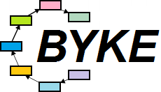
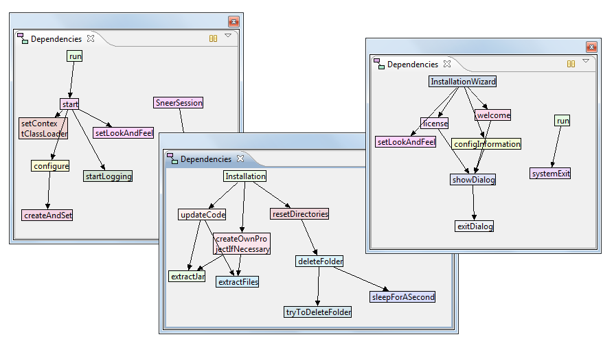
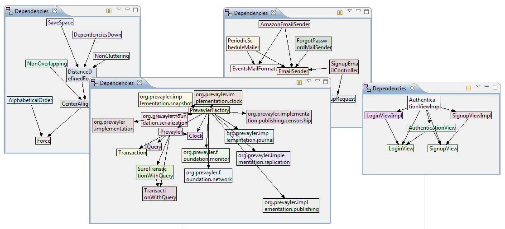

By Klaus
Wuestefeld, Rodrigo
B. de Oliveira, Kent
Beck and contributors
After a compiler and a text editor, a code-structure viewer is the first thing you want. Byke (formerly known as Byecycle, as a reference to eliminating dependency cycles) is the requisite code-structure viewer for Eclipse.
NEW! Insight into your classes: dependencies among methods and fields:
Dependencies among classes and interfaces in a package:
Byke requires Eclipse 3.1 or newer running on Java 5 or newer.
Update site: http://byke.me/updatesite/
Once installed, right-click on any source package > Show Dependencies
If you have any trouble installing or running Byke, please contact us on the discussion group below.
Julio César do Nascimento (code), Wilson Santos (logo final art), Knut Wannheden (code), Dennis Cheung (code)